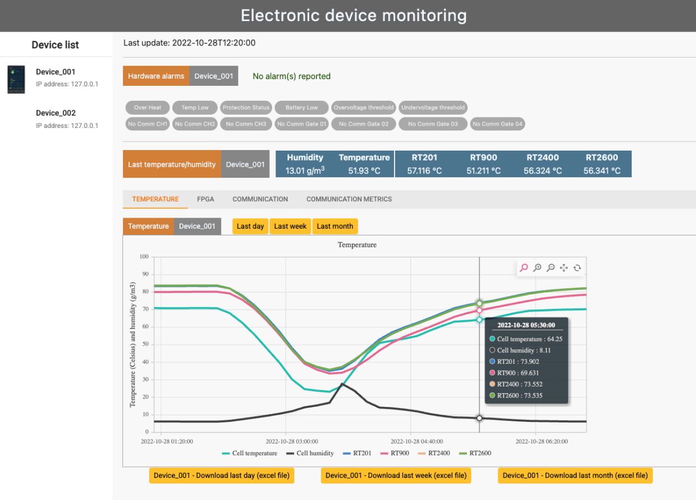
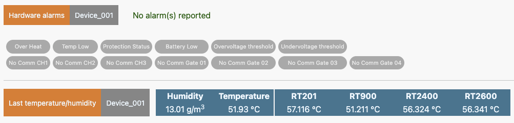
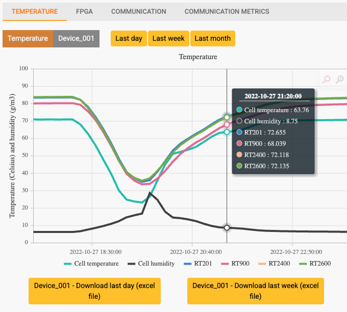
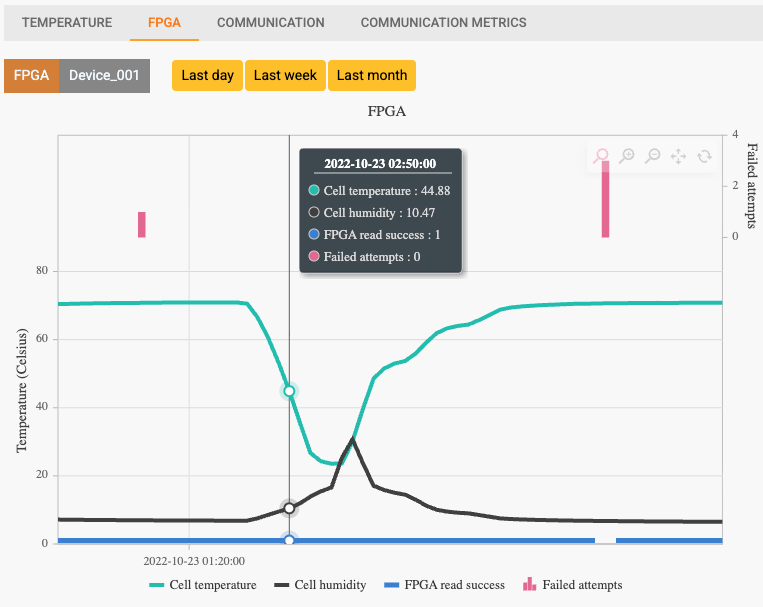
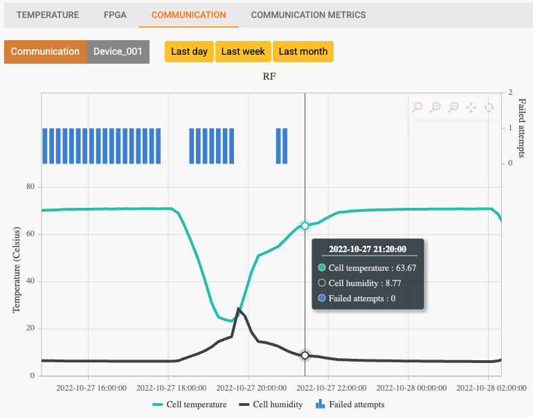
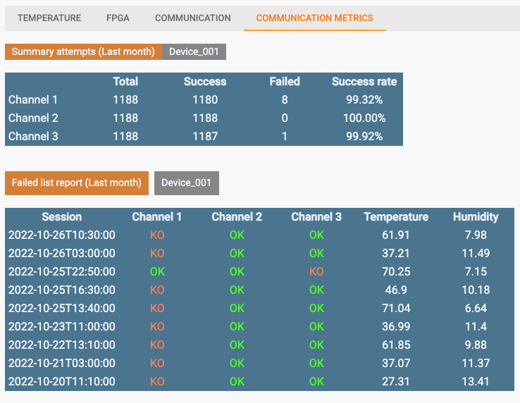
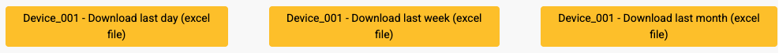

Mobirise
This web server is a software system that acquires and displays in real time the operational status of an electronic device installed inside a climatic chamber (or environmental chamber), where temperature and humidity are controlled and varied in a regulated way.
The system continuously collects data from sensors —such as temperature, humidity (environment chamber), and other diagnostic parameters (integrated into the device)— and processes them to provide an up-to-date representation of the operating conditions. This information is made available through a web interface accessible via a browser, enabling remote monitoring without the need for direct connections to the physical system.
The web server is not limited to simple data visualization, but can also include features such as historical logging, real-time graphs, and alarm thresholds. When internal parameters exceed defined limits (for example, over-temperature or under-temperature conditions), the system can generate notifications or alert states.
This type of architecture is particularly useful in the testing and validation of electronic devices, as it allows the system’s behavior to be observed under extreme or variable environmental conditions, ensuring traceability and detailed analysis of performance over time.


This dashboard displays the temperature monitoring panel for a selected device installed inside an environmental chamber. In the current view, a multi-line chart shows temperature trends recorded by multiple sensors, including the cell temperature, cell humidity and other probes.
Interactive controls allow users to filter the displayed data by last day, last week, or last month, making it easier to analyze trends across different time ranges. By hovering over the graph, users can inspect precise values for each sensor at a specific timestamp.

This dashboard displays the FPGA monitoring panel for a selected device installed inside an environmental chamber.
In this view, the chart combines environmental data—such as cell temperature and cell humidity—with FPGA-related metrics, including read success events and failed attempts.
The graph allows users to analyze how FPGA performance correlates with environmental conditions over time. By hovering over the chart, users can inspect detailed values for each parameter at a specific timestamp.
Users can also filter the displayed data by last day, last week, or last month, and export historical records through dedicated buttons for further analysis.

This dashboard displays the communication monitoring panel for a selected device installed inside an environmental chamber.In this view, the chart shows environmental parameters—including cell temperature and cell humidity—alongside communication-related events, such as failed transmission attempts. This allows users to identify potential correlations between environmental conditions and communication issues over time. By hovering over the graph, users can view detailed values for each parameter at a specific timestamp. The dashboard also provides filters for last day, last week, and last month, enabling users to analyze historical trends across different time periods.

This dashboard displays the communication metrics panel for a selected device installed inside an environmental chamber. The upper section provides a monthly summary of communication attempts across multiple channels, showing the total number of transmissions, successful attempts, failed attempts, and the overall success rate for each channel. This allows users to quickly evaluate communication reliability and identify channels with potential issues. The lower section presents a detailed failed attempts report, listing each communication session along with the status of every channel (OK/KO) and the corresponding environmental conditions, including temperature and humidity values recorded at the time of the event. This view helps users perform deeper diagnostics by correlating communication failures with specific operating conditions and historical sessions.
This section provides dedicated buttons for exporting historical data in Excel format.
Users can download reports containing data collected over the last day, last week, or last month, enabling offline analysis, reporting activities, and long-term data tracking.

Mobirise